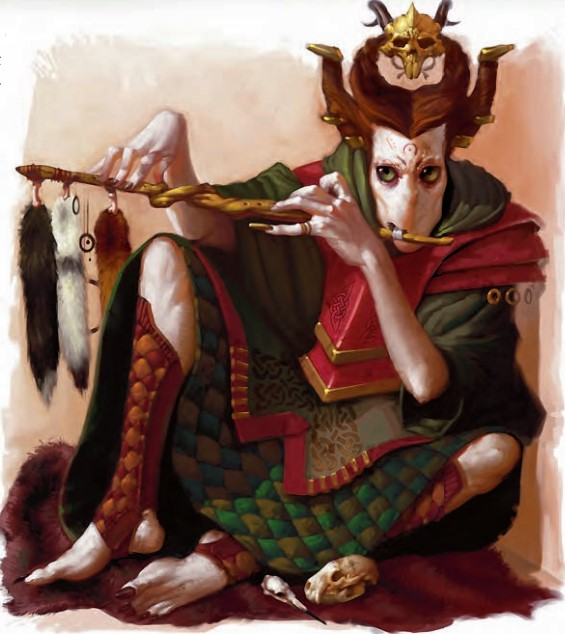

报丧女妖 (Banshrae)
CR 8
中型精类
报丧女妖是一个身着深绿色盛装的苗条人形,头戴饰有坠落至双肩的金色饰物的华贵头饰。要不是那对金色的昆虫一般的眼睛,这个生物椭圆形的面部令人恐怖地毫无特征,它正将一支木雕长笛举至下巴开始演奏一曲令人难忘的旋律。

|
生命骰: |
15d6+45(97hp) |
|
先攻: |
+7 |
|
速度: |
60尺(12格) |
|
防御等级: |
22(+7敏捷,+5偏斜),接触
22, 措手不及
22 |
|
基本攻击/擒抱: |
+7/+10 |
|
攻击: |
近程 徒手打击+15(2D6+3)或远程:精制巨型吹筒+15(1D3) |
|
全力攻击: |
近程 徒手打击+15/+10(2D6+3)或 远程 精制巨型吹筒+15/+10(1D3) |
|
面宽/触及: |
5尺/5尺 |
|
特殊攻击: |
晕眩打击3次/每日(DC19),吹筒长笛,锥形箭雨,飞蝗箭,类法术能力 |
|
特殊能力: |
昏暗视觉,DR
10/寒铁 |
|
豁免: |
强韧+8反射+16意志+11 |
|
属性: |
力量16,敏捷24,体质17,智力14,感知15,魅力20 |
|
技能: |
平衡+17,唬骗+15,攀爬+8,交涉+7,易容+13(表演+15),跳跃+15,知识(自然)+8,聆听+16,潜行+19,表演(管乐器)+28(吹筒长笛+25),侦查+16,生存+2(地表自然环境+4),翻滚+21,绳技+7(捆绑+9) |
|
专长: |
寓守于攻,格挡飞箭(B),闪避,精通徒手打击(B),灵活移动,跳跃攻击,晕眩打击(B),武器娴熟,专攻武器(徒手打击) |
|
地域: |
温带森林 |
|
组织: |
见下文 |
|
挑战等级: |
8 |
|
宝物: |
标准 |
|
阵营: |
通常混乱邪恶 |
|
进化: |
依靠职业等级;天赋职业:战士 |
|
等级调整: |
+4 |
报丧女妖是恶意的音乐精灵,用他们超自然的曲调折磨其他生物。它们用音乐恶作剧的形象掩饰了它们难以置信的战斗技能。报丧女妖使用通用语,精灵语和木族语。报丧女妖无法讲话,但是能使用100尺心灵感应。
战斗:
战斗伊始,报丧女妖召唤它的吹筒长笛开始演奏。然后他利用自己的速度和机动性来控制战场,在敌人间舞蹈来占据使用主要战斗技能的有利位置。它先击退危险的敌手,以便玩弄弱小的敌人。利用寓守于攻来保证自己的安全没有使战斗能力大打折扣,报丧女妖从不从一个位置进攻两次。它使用飞蝗箭并让产生的虫群扑向麻烦的施法者来掌控战斗。
丛林战士(Sylvan
Warrior)(SU)报丧女妖将魅力加值作为偏斜加值加到AC上。在措手不及时不失去敏捷加值。
吹筒长笛(Blowgun
flute)(SU)任何时机,以一个直觉动作,报丧女妖可以召唤出一个同时具备精制巨型吹筒功能的精制长笛(10尺射程)。报丧女妖同时只能持有一支长笛,如果这个乐器不为女妖所持有将会立刻消失。
每轮女妖可以以一个迅捷动作演奏长笛以创造下列的效果之一。半径60尺范围内听到笛音的敌人将会受影响(DC22意志)―任何无法继续听到笛音的敌人将不再受到影响。豁免基于魅力。这是一个影响心灵的声波效果。
可怖挽歌(Dread
Dirge):这曲哀伤的旋律令人深深地不适。受到影响的生物被震慑。这是恐惧效果。
谵妄导曲(Gibbering
Sing-Along):这支朗朗上口的曲子迫使听众喋喋不休地发出无意义的声音。受到影响的生物潜行检定自动失败,如果处于隐身或躲藏状态将暴露位置,无法说话,无法施展有语言成分的法术。
旅人小调(Traveler’s
Tune):这支轻快的小调迫使受影响的生物在这一轮里至少移动20尺。
锥形箭雨(Dart
Cone)(EX)每天魅力加值次,以一个整轮动作,此生物创造出一个15尺锥形吹箭喷射。锥形范围内的生物遭受4D6伤害(DC24反射减半)。豁免基于敏捷。
飞蝗箭(Locust
Dart)(SU)每天一次,报丧女妖可以射出一支特殊吹箭。被这支吹箭命中的敌人恶心1轮,受到2D6伤害同时从他的身体里钻出蝗虫(DC20强韧)。蝗虫以集群的形式出现(MM239)并服从报丧女妖的命令2D6轮直到消失。豁免基于体质。
降咒(Bestow
Curse)(SP)每天一次,报丧女妖可以制造降咒效果。诅咒的受害者会对周围的人产生愤怒,在唬骗和交涉检定中受到-6减值,AC受到-2减值。
类法术能力(CL10):
1次/天―降咒(DC19)
遭遇范例
报丧女妖自私自利,但他们也在居住在邪恶精类群中,并且侍奉强大的领袖。
凶残信使(EL8)一只报丧女妖按着固定线路在邪恶精类据点之间运动重要文书和补给。他在沿路的村庄停下来劫掠,骚扰,谋杀无辜市民。在最近一次经过时,报丧女妖杀死了一个猎人,他是当地领主的友人。领主正在募集勇者伏击这只妖精并要它为这桩罪行付出代价。
生态
曾经报丧女妖不那么有害的精类,在它们更亲切的同类中歌唱和狂欢。由于它们中一个先人的背叛,报丧女妖变成了今天的样子。这个背叛的报丧女妖的名字和实际罪行已经被遗忘,它背叛了一个反复无常的精类女王。女王便向全体报丧女妖施加诅咒,取走了它们的嘴巴。一个强大而可怕的Verdant
princes(翠王子,MM4的一种怪物)与报丧女妖订立契约,向黑暗之灵请愿以允许报丧女妖取回他们部分的音乐才能。从那以后,报丧女妖真正地被诞生了,形成了一种新的致力于制造悲伤和恐惧的精类种族。报丧女妖在休息时通过吸食附近的植物和土地来“进食”。他们用耳朵边被头发覆盖的洞呼吸。
环境:报丧女妖喜欢温带森林,但他们可以在任何精类能忍受的环境中生存。他们喜欢折磨类人生物,所以他们通常居住在类人生物聚落附近。
典型生理特征:报丧女妖酷似体态轻盈的精灵,略高与5尺,大约有100磅重。除了那对金色的昆虫般的眼睛,他们的脸平滑而无特征。他们脆弱的外表掩盖了他们的身体素质和军事技能。
阵营:报丧女妖心灵受到折磨。出于嫉妒心和报复心,报丧女妖会摧毁美丽和有益的事物。他们会摧毁玷污一切它们无法享用的东西,例如食物和水。报丧女妖通常是混乱邪恶的。
社会
报丧女妖与其它坏心眼的精类群居。他们以吟游诗人,间谍或战士的身份为邪恶精类领袖或其它强大的邪恶生物服务。翠王子(Verdant
princes,MM4的一种怪物)和邪恶的宁芙享受这种服务,他们荣耀和宝物回报忠诚,用迅速的死亡惩罚背叛。即使在邪恶精类中,报丧女妖也以因一时兴起便凌虐弱小而声名狼藉。报丧女妖仅仅服从其他报丧女妖和强者。非精类生物仅能从他们手中得到折磨和杀害。
典型财宝
报丧女妖喜欢漂亮衣装和宝石。他们对音乐的爱促使他们收集用珍贵材料制成或穷奢极欲地装饰过的精制乐器。他们有等级挑战等级的标准财宝。
拥有职业等级的报丧女妖
报丧女妖是在战斗与骚乱中狂欢的战士。他们通常通过进阶战士来提升自己的主要战斗技能,另一些则晋升了游荡者。这两种职业都被认为与报丧女妖相关。这些精类从不使用神术―他们蔑视神�o,也与大自然没有精神连接。
报丧女妖学识
自然知识
|
DC |
结果 |
|
18 |
这种生物叫做报丧女妖,是使用音乐迷惑伤害凡人的恶劣精类 |
|
23 |
报丧女妖在战斗中演奏长笛,是强有力的斗士。它们能用长笛射出箭雨。他们在寒铁下显得脆弱。 |
|
28 |
报丧女友有时用一支能使目标不自然地喷出大群蝗虫的特殊吹箭使目标脱离战斗。它也能用由对他人忿怒制成的诅咒来折磨不幸的灵魂。 |